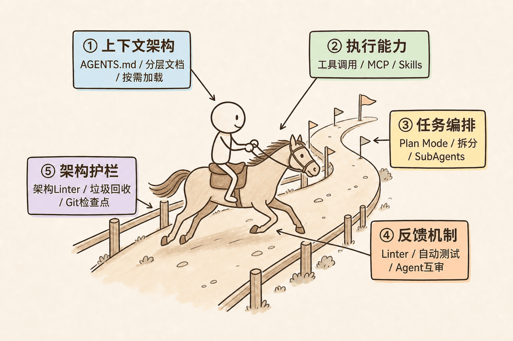
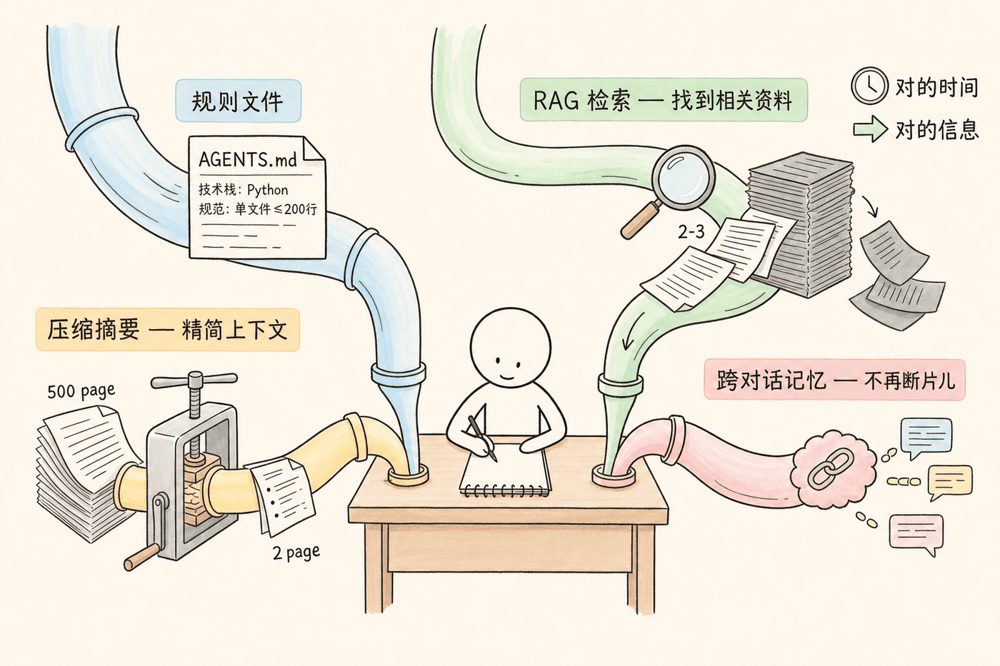
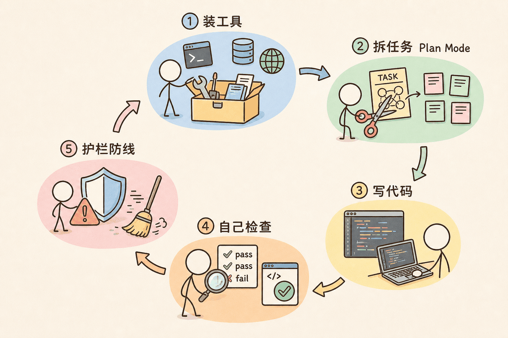
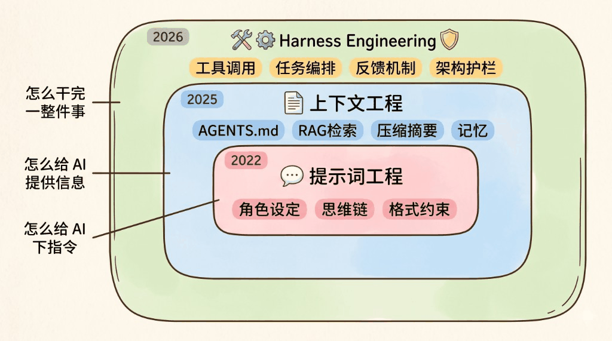
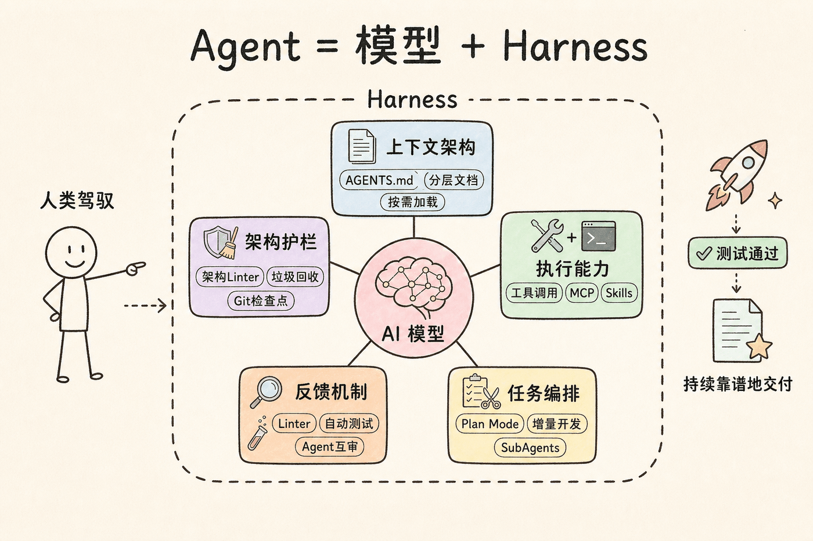

CHAPTER 01
演示
Web / 客户端视频开场，再用一条命令跑 SPECCONFIG 全量。
01演示开场 → 常见痛点 → 三次跃迁 → 五大模块 · 本仓落地
四章主线 · 先看效果，再讲原理，最后落到本仓
Web / 客户端视频开场，再用一条命令跑 SPECCONFIG 全量。
01行为坑与幻读 → 马具隐喻 → 从 Prompt 到 Harness 的三次跃迁。
02上下文、执行、编排、反馈、护栏 —— Agent 可靠交付的骨架。
03五件套落地：Progress · Runner · Skill · Rules · Lint。
04先看 Web / 客户端实机视频，再用一条 Python 命令跑全量用例，再进入 Harness 原理。
文件：docs/web自动化演示.mp4 · 空格播放/暂停 · 翻页会自动暂停
文件：docs/客户端演示.mp4 · 空格播放/暂停 · 翻页会自动暂停
浏览器不能直接打开本机终端（安全限制）。请在仓库根目录粘贴执行；下方可一键复制。
python -m tools.pytest_cli -p SPECCONFIG --headed
--headed；无头跑批可去掉该参数-c case_smoke_login（或任意 cases/SPECCONFIG/runnable/*.yaml 的 case_id）test-output/<时间戳>/report/report.html先讲清是什么，再拆五大模块。
AI 重写整个布局 —— 行为跑偏。
聊十几轮后写成 1000 行 —— 约束蒸发。
又来 3 个新 Bug，代码越改越乱。
规则 / Skill 明明写着路径与约束，AI 仍声称已读文件、编造 API、瞎编目录 —— 文档约束没有强制执行力。
根据历史对话「以为你还要 X」，擅自改接口 / 改命名 / 改流程；跨会话记忆一串味，就把新任务带偏。
说「已按 Skill 做完 / 已自测通过」，但没真读、没真跑、没真验 —— 没有门禁就无法证伪。
AGENTS.md / Skill 是「建议」不是「铁律」。没有 Lint、测试、阶段门禁，约束会在长对话里逐渐蒸发。
模型是马；Harness 是缰绳、路线、围栏 —— 让它跑得更快、更稳。

悬停卡片查看详情 · 同一结论：Harness 决定上限
同一模型，只优化 Harness → 编码榜从 30 名开外冲进前 5
3→7 人小团队，Harness 引导生成约100 万行代码并内部上线
想法→上线从 20 天压到约1.8 天（约 90%），Agent 主导 PR
Initializer + Coding Agent；生成与评审分离，长任务才稳
Sonnet 在 GAIA 上因 Harness 不同，可从约 31% 拉到74%
写清 PRD，把 Agent 循环跑到做完 —— 社区证明「能过夜」
核心：通过对话让 AI 听懂你的需求。
如资深后端工程师，框定回答风格与边界。
一步步思考，降低跳步与胡编。
Few-shot：让它模仿你要的写法。
约束输出（如 JSON），方便下游消费。
核心：在对的时候，把对的信息喂给 AI。

不只喂信息，还要让 AI 持续靠谱地完成整个任务。
终端 / 浏览器 / MCP
大任务增量开发
按阶段推进产物
出问题自己修
防质量越迭代越差


围绕模型搭建的工具、规则、流程、检查机制，全都属于 Harness。
能持续干活的 AI
思考能力 · 生成文本
模型之外的一切 —— 工作环境 + 工作流程

并不抽象 —— 就是 AI 干活时会遇到的几个核心问题；有项目经验的人会觉得很熟。
像新人入职：先喂需求、背景、开发规范。
docs/，按需加载模型本身只会输出文本 —— 要开发项目，得能操作电脑。
跑命令、装依赖、看日志。
读写代码与配置。
实机打开、点选、验收。
联网、读库、抓最新内容。
复杂工作流封成技能包。
一把梭大需求 → 上下文装不下、约束被冲淡 → 渣渣代码。
每次只做一个功能点
出方案，人工确认再写码
每功能存档，可回滚
互不依赖时并行
AI 说「完成了」≠ 一点运行就全是 Bug。
| 环节 | 做什么 | 谁介入 |
|---|---|---|
| 自动检查 | Linter / 测试 / 浏览器 | Harness |
| 自主修复 | 读报错 → 改代码 | Agent |
| 搞不定 | 描述 Bug 求助 | 人 |
| 互审 | 多 Agent ≈ Code Review | Agent × N |
AI 会模仿仓库里已有代码 —— 包括烂代码；技术债越滚越大。
限制依赖方向（≠ 风格 Linter）
提交前自动拦截违规
定期扫描并提修复 PR
每功能提交，随时可回滚
写规则、配工具、拆任务、跑测试、定架构 —— 程序员做项目的老方法；换到 AI 场景，就叫 Harness。
多做完整项目、多积累工程经验 —— 需求分析、方案设计、任务拆解、质量把关，就是最好的 Harness。
AGENTS.md下一章：本仓阶段流水线落地
把通识落进本仓：五件套框架 · 阶段流水线 · 门禁与闭环
Agent 生产 → Harness 校验 → 人审异常 · 虚线英文可悬停看解释
| 组件 | 解释 | 定位 |
|---|---|---|
| Progress 进度看板 |
记录流水线走到哪、状态如何、哪里被 Gate 卡住；内含 S0–S9 阶段字段 cases/SPECCONFIG/progress.yaml · L1；阶段序 harness/core/paths.py · L8（STAGE_ORDER） | Runner 读写 |
| Runner 总控引擎 |
推动 Status/Next；决定要不要 Lint；--advance 时 online 委派 Agent（offline 可跳过）
harness/runner.py · L1；CLI · L1814；委派例 harness/cursor/s1_delegate.py · L1
|
人 · CI · Agent |
| Skill 技能包 |
教「怎么写对」（给人和 Agent）· 不直接被 Python 执行 harness/skills/s1_clean.md · L1；目录 harness/skills/s1–s9 | 人 · Agent |
| Rules 约束条件 |
定义「什么算错」（给 Lint 读的机读 YAML） harness/rules/cleaned_rules.yaml · L1（required_sections / valid_tags） | Lint 脚本 |
| Lint 质检 |
执行检查，输出 pass/fail → 写回 Gate harness/lints/lint_cleaned.py · L1；读 Rules · L18 | Runner 调用 |
Stage = Progress 阶段键 · 序在 STAGE_ORDER · 会开浏览器的主要是 S8（S3 验收可选）
| 阶段 | 工序作用 | 本仓产物 | 引用 |
|---|---|---|---|
| S0 | 标记原始用例已入库，流水线起点记账 | 禅道原文路径（无独立产物文件） | paths.py · L8；runner.py · L1269 |
| S1 | 把原始步骤洗成可自动化结构（标签/口令/断言建议） | cases/<P>/cleaned/*_cleaned.md |
paths.py · L32；s1_clean.md · L1 |
| S2 | 沉淀可复用 Fragment；无引用则可自动跳过 | cases/<P>/fragments/（registry + yaml） |
runner.py · L59–62；跳过 · L1275–L1286 |
| S3 | 编写 Playwright 动作代码；可选实机验收（会开浏览器） | projects/specconfig/actions/*.py |
customer_product_config.py · L1；s3_action.md · L81 |
| S4 | 登记口令→函数映射；把 TODO-ACTION 升为 AUTO | projects/specconfig/action_maps/*.yaml |
customer_product_config.yaml · L1；GUIDE · L41–L47 |
| S5 | 把清洗步骤组装成可执行场景脚本 | cases/SPECCONFIG/runnable/*.yaml |
case_spc_all_smoke.yaml · L1 / L7 |
| S6 | resolve-only 静态校验（展开 fragment、解析口令） | Progress 中 s6_validate 盖章（不启浏览器） | runner.py · L79–82；s6_validate.md · L5 |
| S7 | 生成实机执行计划（展开+resolve，不启浏览器） | reports/runs/.../playwright_plan.json |
s7_playwright_plan.md · L5；GUIDE · L6 |
| S8 | 按 plan 真浏览器实机跑用例 | step_checkpoint.json 等 |
s8_playwright_exec.md · L15；GUIDE · L7–8 |
| S9 | 汇总结果、出报告（读 checkpoint，不开浏览器） | report.html / summary 等 |
s9_report.md · L7；lint_stage_report |
内含 S0–S9 · Runner 读写 · Gate 嵌在阶段块里
status：done / pendingfile：指向 runnable / cleaned 等gate：Lint 后由 Runner 写入 pass/failnotes：fix / feedback / blocker# cases/SPECCONFIG/progress.yaml · L7–
- case_id: case_customer_product_config_dialogs
stages:
s0_raw: { status: done } # L10
s1_cleaned: { status: pending } # L12
s5_runnable:
status: done # L23
file: cases/SPECCONFIG/runnable/
case_customer_product_config_dialogs.yaml # L25
cases/SPECCONFIG/progress.yaml · L7–L25
block["gate"] = {"status": "pass" if ok else "fail"}Progress 里 s3_actions.executed_trace 记录每步 AUTO / TODO-ACTION 是否 passed；未清完不能 mark done。
python -m harness.runner --next \ --case case_customer_product_config_dialogs \ --product SPECCONFIG # CLI 入口 harness/runner.py · L1812–1815
fix 结案已修复
feedback 反馈 → 改 Rules
blocker 阻断同 action lint
python -m harness.runner --note \ --case … --stage s3_actions \ --type fix --msg "已验证…" # --note · L1817；cmd_note · L1643
--lint 前置阶段，再 --advance--advance 时 online 委派 Agent · Lint 盖章写回 Progress
更早 Stage 须 done 且 gate.pass
harness/core/gate_chain.py · L81（assert_prior_chain_gates）Delegate 写产物，或确定性执行
S1 委派 runner.py · L1305–1307 → s1_delegate.py · L1产物路径须存在
cleaned_path · paths.py · L32；runnable_path 等同文件写 gate 回 Progress，决定能否前进
STAGE_META·L53；_write_gate·L519；cmd_advance·L1626# harness/runner.py · L6–9 python -m harness.runner --status|--next|--advance|--lint s1_cleaned \ --case case_spc_all_smoke --product SPECCONFIG
首步必须 登录@admin；标签 AUTO / TODO-ACTION…
必填章节、合法标签、强制登录基线…
harness/rules/cleaned_rules.yaml · L1 required_sections · L5 valid_tags · L17 require_login_baseline读 Rules，扫 cleaned，返回 pass/fail
lint_cleaned.py · L18 RULES_PATH · L283 lint() · L421 status=现场反馈 / blocker / 失败用例
归类：fix · feedback · 规则外
补 Skill / Rules / Fragment
门禁是否拦住同类错
Rules / Skill 写回仓
沉淀对象：Skill · Rules · Preset / Fragment / action_map · README.md · L3；action_maps/customer_product_config.yaml · L1
--next / --lint / --advanceMIT 免费使用（含商用）· 微信或 USDT-TRC20 · 非强制
单文件 HTML 培训幻灯片 · 离线可演示 · AI Agent 可改页 · 导出 PPTX
TEGYcyUFuGshMySR3Y89AFpCDeihozNT7E
勿用 ERC20 / BEP20 / 其它网络